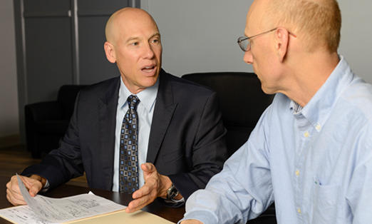

Tampa Auto Collision Legal Guidance
When a vehicle crash creates disagreement about repair responsibility, coverage, or the value of a claim, a focused legal review can bring structure to the process. A Tampa Car Accident Lawyer may help identify the parties whose conduct or contractual obligations should be examined, while Tampa Car Accident Lawyer can assist with communicating a clear position to insurers, repair facilities, or other representatives. The goal is to replace rushed decisions with a strategy based on the available facts and the person's practical priorities.
Disputes may involve questions about vehicle ownership, rental expenses, liens, or whether a settlement adequately accounts for future consequences. Tampa Car Accident Lawyer can review the language of relevant policies and agreements, and Tampa Car Accident Lawyer may help explain options when another party contests responsibility or delays a response. Careful attention to deadlines, release language, and proposed settlement terms can reduce the risk of accepting an arrangement that does not match the claimant's needs.
Every matter has its own mix of transportation needs, financial pressures, and procedural concerns, so generalized online guidance may not answer the central questions. Tampa Car Accident Lawyer can provide a clearer framework for weighing whether continued negotiation or court action is appropriate. Timely, informed decision-making can help a person protect important interests while moving toward a practical resolution.

Tampa Advocacy For Accident Recovery
After a serious roadway collision, the path forward may involve medical decisions, transportation changes, employment concerns, and difficult conversations with other parties. A legal professional can help organize those issues, explain available courses of action, and reduce the risk of making rushed choices. Tampa Car Accident Lawyer may assess the broader impact of the event and help set priorities that reflect both immediate needs and longer-term stability. With consistent guidance, Tampa Car Accident Lawyer may also help a client communicate clearly while preserving room for informed decisions.
Planning should account for more than the first round of expenses. Ongoing treatment, reduced earning capacity, changes at home, and the prospect of future assistance can all affect the practical value of a resolution. Tampa Car Accident Lawyer may work with a client to clarify these considerations, while Tampa Car Accident Lawyer can help compare proposed outcomes against the likely demands of continued care. A measured approach gives the client time to ask questions and understand the consequences before agreeing to a final course.
Because no two collisions produce the same medical, financial, or personal consequences, an effective strategy should remain flexible. Regular updates, plain-language explanations, and careful attention to deadlines can make the process more manageable as circumstances change. Tampa Car Accident Lawyer may continue assisting through negotiation, administrative steps, or litigation when appropriate, with the goal of protecting the client's interests and supporting a sustainable return to daily life.
Representation Following A Florida Crash
Selecting legal counsel is an important step when a motor vehicle dispute may require more than routine administrative attention. A preliminary discussion with Tampa Car Accident Lawyer can clarify the scope of possible services, the expected stages of a case, and the decisions that remain with the client. Tampa Car Accident Lawyer may also explain fee arrangements, potential conflicts, and whether the available information supports proceeding through negotiation, mediation, or a court action.
After an engagement begins, counsel typically examines the legal theories that fit the known facts, considers how opposing positions could be challenged, and sets a timetable for the matter. Tampa Car Accident Lawyer may handle procedural filings and coordinate discovery, while Tampa Car Accident Lawyer can prepare a client for sworn testimony, mediation, or other formal proceedings. Clear explanations at each stage help prevent misunderstandings about authority, expectations, and the likely pace of the case.
Before accepting an agreement, a client should review its language carefully, including any release, confidentiality term, allocation of funds, or provision affecting future action. Questions about deadlines, court orders, and the consequences of ending a case deserve attention before a signature is placed. Tampa Car Accident Lawyer can translate technical provisions into practical terms so the client can make a deliberate decision with a clear understanding of the commitment involved.
DISTASIO INJURY LAW
DISTASIO INJURY LAW
1112 Channelside Drive Suite 5 Tampa, FL 33602
(813) 729-6859